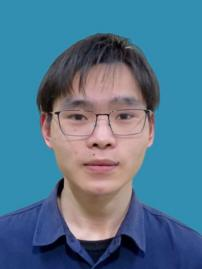

年龄：24 岁 | 性别：男 | 状态：在职寻岗
电话/微信：17625191729 | 邮箱：2449695354@qq.com
博客：https://dingdingdang.online | GitHub：https://github.com/YiguiDing
意向城市：常州、成都、重庆 | 预期薪资：18k-20k
意向岗位：嵌入式软件工程师、电机控制算法工程师、软硬件结合开发、上位机开发

| 嵌入式 | STM32 及标准库和 HAL 库、Arduino 开发、树莓派 Linux 开发、FOC 算法（有感/无感） |
|---|---|
| 硬件设计 | 电机驱动板设计、三相逆变电路、电流检测电路、位置传感器（编码器/霍尔）、供电系统设计、Multisim 仿真 |
| 嵌入式系统 | FreeRTOS、嵌入式 Linux 系统移植、UART/SPI/I2C、定时器/PWM、ADC/DAC、DMA、串口通信 |
| 前端/桌面端 | Vue、Vue3、TypeScript、Electron、CSS3、HTML5、layui |
| 编程语言 | C、C++、Java、JavaScript、TypeScript |
开发一套完整的 FOC 电机驱动系统，包含驱动板硬件设计、固件开发、上位机调参软件。
技术栈：STM32、C 语言、FOC 算法、SVPWM、硬件设计、Vue3、TypeScript、Electron、串口通信
演示视频：https://www.bilibili.com/video/BV1EMzZYwEai
为水下机器人开发上位机控制系统，实现运动控制、路径规划、视频流等功能。
技术栈：Vue3、TypeScript、Electron、串口通信、网络编程
开发一款用于无刷电机参数配置和调试的上位机软件。
技术栈：Vue、TypeScript、Electron、串口通信
开发一款可视化的 PID 参数调试工具，支持实时波形显示和参数整定。
技术栈：Vue、TypeScript
GitHub：https://github.com/YiguiDing/pid-configer
开发一款桌面端效率工具，支持计划管理、待办事项、日程管理、笔记管理等功能。
技术栈：Electron、Vue、TypeScript、Node.js、SQLite、Prisma、Express
南京师范大学泰州学院 2024.06
信息工程学院 | 计算机科学与技术 本科 | 泰州市
更多项目细节和技术笔记可访问：
个人博客：https://dingdingdang.online
GitHub：https://github.com/YiguiDing